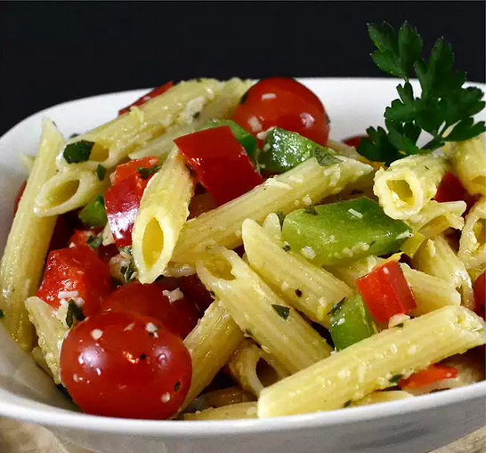

This is truly a must have pasta salad especially if you are Italian. I can't keep this in the house, it goes as fast as I make it. Enjoy!
Prep: 25 mins
Cook: 10 mins
Total: 35 mins
Servings: 8
Yield: 8 servings
Bring a large pot of lightly salted water to a boil. Add pasta, and cook for 8 to 10 minutes, until tender. Drain, and transfer to a large bowl. Stir in enough olive oil to coat, but not so that it pools at the bottom of the bowl. Mix in the red and green bell peppers, tomatoes, garlic, salt, pepper, basil, parsley, oregano and Asiago cheese. Mix in the Parmesan cheese. Refrigerate until 20 minutes before serving. If the pasta soaks up a lot of the oil, you may need to add more. Taste the salad as you are preparing it, you may like more or less ingredients.